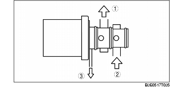

Shift solenoid A, B and C (duty-cycle type) function
• The duty-cycle type shift solenoid adjusts the amount of output pressure according to the signal from the PCM, and controls the pressure of each clutch.
• The duty-cycle type shift solenoid, which switches ON/OFF at 50 Hz (20 ms cycle) and controls the output pressure, is adopted. By changing the ON time ratio a cycle (0-100 %), the solenoid adjusts the time ratio of the OPEN (supply) and CLOSE (drain), and maintains the clutch pressure at the designated hydraulic pressure. As a result, the clutch pressure rises when the duty ratio (50 Hz ON time ratio) is reduced, and falls when the duty ratio is raised.
